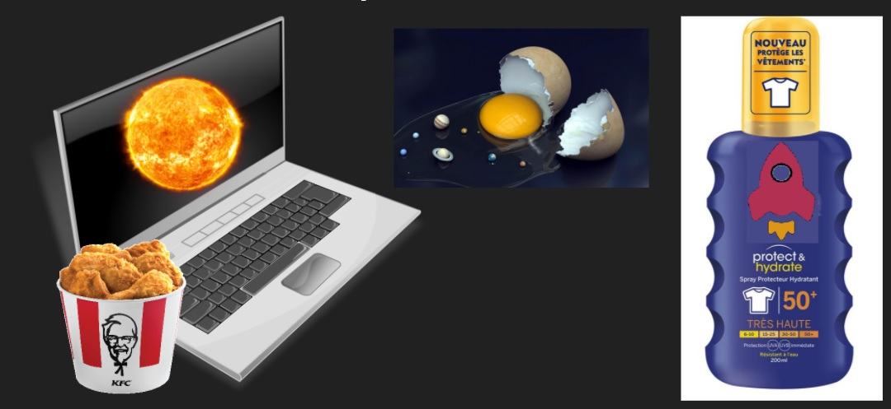

Les bO tutos

Nos meilleurs astuces pour bien configurer son CSGO
10/01/2021
Avant toutes choses, je vous recommande d'activer la console dans les paramètres du jeu, que ce soit pour utiliser certaines de ces astuces ou simplement savoir par exemple les dégats infligés pendant le round, ...
1. Le viseur
Vous l'avez peut être remarqué, mais sur Counter-Strike, il y a presque autant de cheater... euh, de viseurs que de joueurs. Cette partie va vous aider à choisir celui qui vous correspond le plus.
Cette partie a été inspiré d'un excellent guide trouvé sur le steam community que vous pouvez retrouver ici.
Remarque : Si le rendu n'est pas le même, vous pouvez essayer de le mettre en plusieurs fois, chez moi les versions qui suivent marchent mais je sais que j'ai été obligé d'en écrire en 2 fois certaines qui marchaient en une seule chez d'autres.
Le 1er et non des moindres, si vous avez tendance à ne pas voir votre viseurs car il est trop fin:

cl_crosshairalpha "255";cl_crosshaircolor "5";cl_crosshaircolor_b "0";cl_crosshaircolor_r "255";cl_crosshaircolor_g "0";cl_crosshairdot "1";cl_crosshairgap "-6";cl_crosshairsize "100";
cl_crosshairstyle "4";cl_crosshairusealpha "1"cl_fixedcrosshairgap "-6";cl_crosshair_outlinethickness "0";cl_crosshair_drawoutline "0";cl_crosshairthickness "50";Celui-ci est pour jouer comme FeeF, c'est à dire sur un écran presque carré

cl_crosshairalpha "255";cl_crosshaircolor "5";cl_crosshaircolor_b "50";cl_crosshaircolor_r "50";cl_crosshaircolor_g "250";cl_crosshairdot "0";cl_crosshairgap "-100";cl_crosshairsize "100";cl_crosshairstyle "4";cl_crosshairusealpha "1"
cl_crosshairthickness "800";cl_fixedcrosshairgap "-100";cl_crosshair_outlinethickness "0";cl_crosshair_drawoutline "0";
Celui-là peut être employé si minecraft vous manque beaucoup, ou si comme pour le 1er, vous avez toujours du mal à distinguer le viseur (mais vous aurez peut être du mal à distinguer l'adversaire)

cl_crosshairalpha "255";cl_crosshaircolor "5";cl_crosshaircolor_b "50";cl_crosshaircolor_r "50";cl_crosshaircolor_g "250";cl_crosshairdot "0";cl_crosshairgap "-100";cl_crosshairsize "100";cl_crosshairstyle "4";cl_crosshairusealpha "1"
Enfin, on rentre dans les viseurs plus intressants, avec ce viseur, vous allez tout de suite montrer à vos alliés que vous êtes expérimenté. Ce viseur peut aussi permettre d'ajouter des viseurs IRL, c'est à dire par dessus l'écran, vous pouvez les dessiner au stylo, au feutre, à la peinture, en découper un puis le coller sur l'ecran, ... bref vous pouvez laisser libre cours à votre imagination (voir ci-dessous)
crosshair 0
Par exemple ce viseur qui vous permet de vous protèger du covid quand vous jouez avec des joueurs inconnus et qui sont peut être porteur du virus.

Ou celui-ci obtenu à l'aide d'elastiques.
Voir même celui là élaboré à l'aide d'un bouchon.
2. Amélioration des performances
Console:
- cl_forcepreload 1 (Charge la map et les sons avant de joindre le serveur. Peut augmenter le temps de chargement.)
- cl_forcepreload 1 (Charge la map et les sons avant de joindre le serveur. Peut augmenter le temps de chargement.)
- cl_disablehtmlmotd 1 (Désactive le message du jour des serveurs)
- cl_foot_contact_shadows 0 (Réduit la qualité des ombres)
- r_eyemove 0 et r_eyeglow 0 (Supprime le mouvement et l'éclat des yeux du joueur)
Options de lancement:
- -novid (supprime l'écran initial lorsque le jeu démarre)
- -nojoy (désactive la prise en charge de la manette de jeu dans le jeu)
- -high (Donne au jeu une priorité élevée)
- -freq 60 (Ici, nous enregistrons le nombre de Hz de notre moniteur, par exemple 60)
- -dxlevel 81 (Exécute le jeu sur directX 8.1)
- vous pouvez aussi jouer avec -threads ou -heapsize si vous souhaitez allouer des ressources partiulière au jeu.
Pour utiliser des options de lancement, aller depuis Steam dans les propriétés de CSGO (clic droit sur le jeu > Propriétés) et c'est juste ici:
La plupart de ces options vous feront gagner un peu en performance, mais si vous avez un PC correct, la majorité d'entre elles ne serviront pas à grand chose.
3. Quelques bindings
Changer l'arme de côté:
bind x "toggle cl_righthand 0 1"
Changer l'arme automatiquement en fonction du côté où vous vous déplacez:
bind q "+moveleft ; cl_righthand 1";bind d "+moveright ; cl_righthand 0"
Avoir une touche par grenade:
bind z "use weapon_flashbang";bind x "use weapon_smokegrenade";bind c "use weapon_hegrenade";bind v "use weapon_molotov;use weapon_incgrenade"
Nettoyer les graffitis et le sang:
bind m "r_cleardecals"
Cela peut servir si les graffitis ou taches de sang vous empechent de voir clairement un emplacement.
Droper la bombe
bind b "use weapon_knife; use weapon_c4; drop; slot1"
Muter/Demuter le chat global
bindtoggle j voice_enable
Avoir un crosshair pour aligner ses grenades:
bind 1 "slot1 ; cl_crosshairsize 3"; bind 2 "slot2 ; cl_crosshairsize 3"; bind 3 "slot3 ; cl_crosshairsize 3"; bind 4 "slot8 ; cl_crosshairsize 1000"
Il faut remplacer 3 par la taille de votre viseur actuel.
Avoir différent niveau de zoom sur la map
bind o "incrementvar cl_radar_scale 0 1 0.25"
Avoir un HUD stylé
bind q "+moveleft; cl_hud_color 3"
bind z "+forward; cl_hud_color 8"
bind d "+moveright; cl_hud_color 5"
bind s "+back; cl_hud_color 4"
bind space "+jump; cl_hud_color 2"
Vous pouvez ajouter des couleurs sur d'autre touches pour parfaire et personnaliser cet ultime config. Vous pouvez en profiter pour jouer sur la couleur (ou un autre paramètre) du viseur et non uniquemenet sur le HUD.
3. Les erreurs à ne pas reproduire
3.1 Le materiel
Il est preferable d'utiliser au moins un écran, sans écran c'est beaucoup plus difficile car vous ne pouvez compter que sur le son et la chance pour l'emporter (à moins que vous n'ayez un dispositif spécial pour retranscrire l'information à l'écran d'une autre manière).
On a fait face à ce genre de problèmes au sein même de l'équipe: il faut que vous ayez suffisament d'espace, notament pour bouger votre souris. J'en profite pour dire avec le plus grand des serieux (comme à mon habitude) que vous devriez dans la mesure du possible essayer d'être bien installé, que ce soit pour votre confort personel mais aussi pour votre santé. Donc asseyez vous correctemnt et tenez vous a une distance raisonnable de votre écran : )
Comme une image vaut mieux que mille mots, je ne le répeterai pas, N'UTILISEZ PAS DE MANETTE DANS LA MESURE DU POSSIBLE:
Optez donc pour la simplicité, une souris et un clavier. La souris peut être un vrai casse-tête, mais tant que cette tête en question n'est pas chauve, vous pourrez jouer a quasiment n'importe quoi excepté peut être les jeux de la franchise Batman. Pour ce qui est du clavier, même un bon vieux clavier peut faire l'affaire, il suffit d'un peu d'entretient pour qu'il soit comme neuf. Si vous vous demandez comment entretenir votre clavier, je vous conseille la vidéo suivante:
Des lunettes de protection peuvent être les bienvenues, tant qu'on parle des lumières bleues j'en profite pour vous prodiguer le conseil d'un camarade: appliquez de la cyber-crème solaire, car sur votre ordinateur - que dis-je sur voter machine de guerre - vous devez vous proteger du cyber-espace.
Pour ce qui est du son, je le met a la fin car c'est pas trop utile si vous avez un écran... du coup n'investissez pas dans du bon materiel de ce côté, vous pouvez même utiliser un ou des hauts parleurs, le plus important c'est de trouvez une musique bien motivante à mettre à fond pendant vos parties endiablées.
Commentaires
Comments 1
PARFAIT, ça marche du tonnerre!!
AxxA
La JÀÁJ team vous fait profiter de sa grande experience en réunissant nombre d'astuces incroyables afin de vous améliorer grandement à CSGO, dites adieu au silver et tracer votre route veers le Global Élite.
D'autres articles:
- Capture vidéo sous Linux
-
 Lecture multimédia depuis le terminal
Lecture multimédia depuis le terminal
-
 Libérons cette caisse
Libérons cette caisse
-
 Écriture en boucle
Écriture en boucle